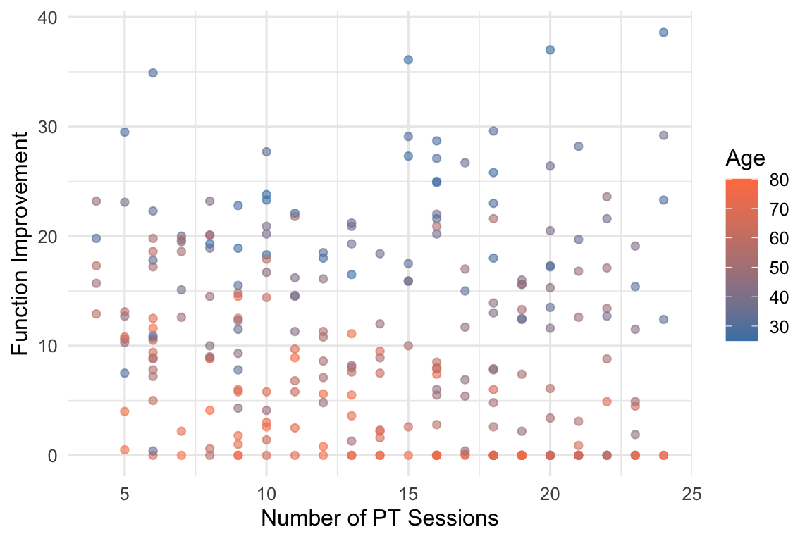
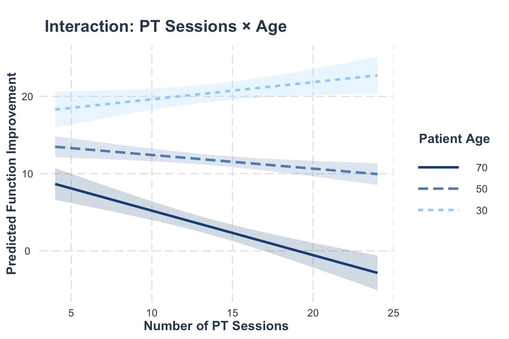

Linear Regression 2: Dummy Variables and Interaction Effects
MBA642: Business Analytics in Healthcare Management
Published
March 30, 2026
Introduction
In Week 11, we used continuous predictors (e.g., wait time, staffing hours, patient severity) to predict outcomes. But many important variables in healthcare are categorical (e.g., hospital type, insurance status, treatment protocol, or region). Additionally, the effect of one variable may depend on the value of another (interaction effects). For instance, a treatment may work differently for different patient populations.
Dummy variables and interactions extend linear regression by answering more nuanced questions:
Do patients in the ERAS (Enhanced Recovery After Surgery) protocol have shorter hospital stays than those in standard care, after controlling for age and severity? (comparing group outcomes)
Is the effect of nurse staffing on patient satisfaction different in for-profit vs. non-profit hospitals? (testing conditional effects)
Does treatment effectiveness vary by insurance type (if so, by how much)? (quantifying group-specific effects)
Why This Matters
Healthcare managers frequently encounter situations where understanding group differences and conditional effects is crucial for decision-making. For example:
Resource allocation: Do readmission rates differ across hospital types (teaching vs. community vs. critical access)?
Cost management: Does an enhanced recovery protocol reduce length of stay compared to standard care?
Quality improvement: Does the effect of staff training on patient satisfaction depend on hospital ownership type?
What We Cover Today
This lecture introduces two extensions to the linear regression framework from Week 11:
Dummy Variable Regression: Including categorical predictors in regression models
Binary categories (e.g., ERAS vs. Standard care)
Multi-level categories (e.g., Teaching vs. Community vs. Critical Access hospitals)
Interaction Effects: Testing whether the effect of one variable depends on another
Continuous × Categorical (e.g., does staffing effect vary by hospital ownership?)
Categorical × Categorical (e.g., does treatment effectiveness vary by insurance type?)
Continuous × Continuous (e.g., does PT session benefit depend on patient age?)
1. Dummy Variables (Indicator Variables)
What is it?
Dummy variables (also called indicator variables) allow us to include categorical predictors in regression models, which mathematically require numerical inputs. Each dummy variable uses a simple 0 vs. 1 coding to indicate whether an observation belongs to a particular category.
For a categorical variable with k categories, we create k-1 dummy variables, with one category serving as the reference group against which all others are compared.
For example, if we have a variable “Hospital Type” with three categories (Teaching, Community, Critical Access), we would create two dummy variables:
Dummy 1: Teaching (1 if Teaching, 0 otherwise)
Dummy 2: Critical Access (1 if Critical Access, 0 otherwise)
Community hospitals would be the reference category (both dummies = 0).
Dummy 1 captures the difference between Teaching and Community hospitals (the reference category), while Dummy 2 captures the difference between Critical Access and Community hospitals.
When to Use It
Use dummy variables when you need to:
Include categorical predictors in regression (hospital type, insurance status, treatment group)
Compare outcomes across different categories while controlling for other variables
Test whether group differences are statistically significant
Quantify the magnitude of differences between categories
The Challenge with Categorical Variables
Regression requires numerical inputs, but categorical variables are not inherently numerical. Simply assigning numbers (1, 2, 3) to categories implies an ordering and equal spacing that usually doesn’t exist.
Solution: Create dummy variables that represent category membership using 0s and 1s.
1.1 Binary Categorical Variables
For a variable with two categories, we need one dummy variable. For example, if we have a categorical variable called Insurance with two categories (Insured and Uninsured), we would create one dummy variable called Insured:
Patient
Insurance Status
Dummy: Insured
1
Insured
1
2
Uninsured
0
3
Insured
1
4
Uninsured
0
The coefficient on the dummy variable (Insured) represents the difference in the outcome between the two groups (Insured vs. Uninsured).
Dummy Variable Example Case: Treatment Protocol Comparison
Background and Context
Traditional surgical recovery involves extended hospital stays, which are costly and can lead to complications.
Enhanced Recovery After Surgery (ERAS) protocols use evidence-based practices to help patients recover faster. These include:
Better pain management (using less opioid medication)
Getting patients moving sooner after surgery
Starting normal eating earlier
A 2025 study found that ERAS protocols significantly reduce hospital length of stay compared to traditional care, with patients recovering and being discharged substantially earlier.
Let’s compare patient outcomes (length of stay) between standard care and ERAS protocols to quantify the treatment effect using a dummy variable.
Data Loading
Let’s load the dataset using the code below:
# Required packageslibrary(tidyverse)library(car)library(emmeans)library(interactions)set.seed(2026)# Loading the datasetsurgical_data <-read.csv("https://raw.githubusercontent.com/mba642-spring-26/mba642-spring-26.github.io/refs/heads/main/datasets/week12_surgical_data.csv")# Display the datasethead(surgical_data, 5)
X patient_id protocol age bmi surgery_complexity length_of_stay
1 1 1 Standard 77 27.3 3 9.8
2 2 2 Standard 56 27.1 3 10.4
3 3 3 Standard 59 23.7 3 9.3
4 4 4 ERAS 49 32.8 3 9.6
5 5 5 Standard 74 23.8 3 11.0
The dataset includes 200 surgical patients with the following variables:
patient_id: Unique identifier for each patient (1 to 200)
protocol: Treatment protocol assigned (Standard or ERAS)
age: Patient age in years
bmi: Body Mass Index (measure of body fat based on height and weight)
surgery_complexity: Complexity level of the surgery (1 = Low, 2 = Medium, 3 = High)
length_of_stay: Hospital length of stay in days (our outcome variable)
The variable protocol is our binary categorical variable (Standard vs. ERAS). We’ll create a dummy variable for ERAS (1 = ERAS, 0 = Standard) to include in our regression model.
We can do this using the factor() function in R, which automatically creates the necessary dummy variable.
# R automatically creates dummy variables for factorssurgical_data <- surgical_data %>%mutate(protocol =factor(protocol, levels =c("Standard", "ERAS")))
Before fitting the model, let’s visualize the distribution of length of stay by treatment protocol:
Figure 1: Distribution of length of stay by treatment protocol
The boxplot suggests that ERAS patients tend to have shorter hospital stays. Let’s test this formally with regression.
Fitting the Model
We can fit a linear regression model using the lm() function in R. When we include the variable protocol in the model, which is a factor, R automatically creates the dummy variable for us.
# Fit modelmodel_protocol <-lm(length_of_stay ~ protocol + age + bmi + surgery_complexity,data = surgical_data)summary(model_protocol)
Call:
lm(formula = length_of_stay ~ protocol + age + bmi + surgery_complexity,
data = surgical_data)
Residuals:
Min 1Q Median 3Q Max
-2.5721 -0.7067 -0.0943 0.5793 3.4279
Coefficients:
Estimate Std. Error t value Pr(>|t|)
(Intercept) 3.218238 0.587057 5.482 1.29e-07 ***
protocolERAS -1.788155 0.143425 -12.468 < 2e-16 ***
age 0.027256 0.006647 4.100 6.05e-05 ***
bmi 0.047624 0.012879 3.698 0.000283 ***
surgery_complexity 1.496551 0.086916 17.218 < 2e-16 ***
---
Signif. codes: 0 '***' 0.001 '**' 0.01 '*' 0.05 '.' 0.1 ' ' 1
Residual standard error: 1.007 on 195 degrees of freedom
Multiple R-squared: 0.7347, Adjusted R-squared: 0.7292
F-statistic: 135 on 4 and 195 DF, p-value: < 2.2e-16
Key Interpretation:
The coefficient for protocolERAS is approximately -1.79.
This means that patients in the ERAS protocol have a length of stay that is 1.79 days shorter than patients in the Standard protocol, holding age, BMI, and surgery complexity constant.
The Standard protocol is the reference category (omitted from the output). The comparison is made relative to this reference group.
Manual Calculation with Dummy Variables
Let’s manually calculate predicted length of stay to understand how dummy variables work in the regression equation.
The difference is -1.79 days, which is exactly the coefficient for ERAS (-1.79). This confirms that the dummy variable coefficient (\(\beta_1\)) represents the difference in predicted outcomes between the two groups, holding all other variables constant.
1.2 Multi-Level Categorical Variables
When a categorical variable has more than two levels, we need k-1 dummy variables (where k is the number of categories).
Why k-1 and Not k?
Including a dummy for every category would create perfect multicollinearity (the dummy variables would sum to 1 for every observation, which is perfectly correlated with the intercept).
Multi-Level Categorical Variables Example: Hospital Type Comparison
Background and Context
Hospitals come in different types:
Teaching hospitals: Large academic medical centers that train medical residents and handle complex cases
Community hospitals: General hospitals serving local populations
Critical Access hospitals: Small rural hospitals in remote areas with limited resources
A 2017 study examining nearly 4,500 U.S. hospitals found that readmission rates vary by hospital type, reflecting differences in patient complexity, resources, and care patterns.
In this example, we test whether 30-day readmission rates (the percentage of patients who return to the hospital within 30 days) differ across these hospital types.
Let’s compare 30-day readmission rates across three hospital types while controlling for patient characteristics and staffing levels using dummy variables.
Data Loading
Let’s load a dataset using the code below:
# Generate hospital datahospital_type_data <-read.csv("https://raw.githubusercontent.com/mba642-spring-26/mba642-spring-26.github.io/refs/heads/main/datasets/week12_hospital_type_data.csv")# Summary by hospital typehead(hospital_type_data, 5)
X hospital_id hospital_type bed_count avg_patient_severity nurse_per_patient
1 1 1 Community 160 2.51 4.11
2 2 2 Community 303 2.69 2.35
3 3 3 Community 34 2.24 4.78
4 4 4 Community 316 1.70 3.82
5 5 5 Community 315 1.83 3.88
readmission_rate
1 19.0
2 21.0
3 17.0
4 17.0
5 17.5
The dataset includes hospitals with the following variables:
hospital_id: Unique identifier for each hospital
hospital_type: Type of hospital (Community, Teaching, or Critical Access)
bed_count: Number of hospital beds
avg_patient_severity: Average patient severity score
Figure 2: Distribution of readmission rates by hospital type
The boxplot suggests differences in readmission rates across hospital types. Let’s use regression to test these differences formally while controlling for patient severity and staffing.
Fitting the Model with Multiple Categories
Before fitting the model, let’s make the variable hospital_type as a factor with “Community” as the reference category using the factor() function. We will put “Community” first in the levels argument to ensure it is the reference category.
This will create two dummy variables:
hospital_typeTeaching: 1 if the hospital is a teaching hospital, 0 otherwise
hospital_typeCritical Access: 1 if the hospital is a critical access hospital, 0 otherwise
We can fit a linear regression model using the lm() function in R. When we include the variable hospital_type in the model, which is a factor, R automatically creates the dummy variables for us.
# Fit modelmodel_hospital <-lm(readmission_rate ~ hospital_type + avg_patient_severity + nurse_per_patient, data = hospital_type_data)summary(model_hospital)
Call:
lm(formula = readmission_rate ~ hospital_type + avg_patient_severity +
nurse_per_patient, data = hospital_type_data)
Residuals:
Min 1Q Median 3Q Max
-5.3053 -1.2590 0.0879 1.3945 5.0647
Coefficients:
Estimate Std. Error t value Pr(>|t|)
(Intercept) 15.5766 0.6934 22.466 < 2e-16 ***
hospital_typeTeaching -2.3559 0.2942 -8.009 4.68e-14 ***
hospital_typeCritical Access 3.2578 0.2999 10.864 < 2e-16 ***
avg_patient_severity 2.2348 0.2180 10.251 < 2e-16 ***
nurse_per_patient -0.8597 0.1589 -5.411 1.49e-07 ***
---
Signif. codes: 0 '***' 0.001 '**' 0.01 '*' 0.05 '.' 0.1 ' ' 1
Residual standard error: 1.909 on 245 degrees of freedom
Multiple R-squared: 0.6199, Adjusted R-squared: 0.6137
F-statistic: 99.88 on 4 and 245 DF, p-value: < 2.2e-16
Interpretation:
Reference Category: Community hospitals (omitted from output)
Teaching Hospitals: Readmission rate of Teaching Hospitals is 2.356 percentage points lower than Community hospitals (β = -2.356)
Critical Access Hospitals: Readmission rate of Critical Access Hospitals is 3.258 percentage points higher than Community hospitals (β = 3.258)
Testing Comparisons Between Non-Reference Categories
The regression output provides p-values for comparisons against the reference category (Community hospitals), but what about comparing Teaching vs. Critical Access hospitals directly?
We need to test whether the linear combination of coefficients is statistically significant. We can use the emmeans() function with the pairs() function for pairwise comparisons.
# Calculate estimated marginal meansemm <-emmeans(model_hospital, ~ hospital_type)# Pairwise comparisons with Tukey adjustment for multiple testingpairs(emm, adjust ="tukey")
contrast estimate SE df t.ratio p.value
Community - Teaching 2.36 0.294 245 8.009 <0.0001
Community - Critical Access -3.26 0.300 245 -10.864 <0.0001
Teaching - Critical Access -5.61 0.344 245 -16.324 <0.0001
P value adjustment: tukey method for comparing a family of 3 estimates
This provides all pairwise comparisons with p-values:
Teaching vs. Community
Critical Access vs. Community
Teaching vs. Critical Access (this is what we want!)
Based on these tests, we can conclude whether Teaching hospitals have statistically significantly lower readmission rates than Critical Access hospitals, not just numerically lower rates.
Now that we can include categorical predictors in our regression models, let’s explore what happens when the effect of one variable depends on the value of another.
2. Interaction Effects
What is it?
An interaction effect occurs when the effect of one variable on the outcome depends on the value of another variable (we talked about this in two-way ANOVA). In other words, the relationship between X₁ and Y changes across different levels of X₂.
Mathematically, we add an interaction term that is the product of the two variables:
The interaction coefficient \(\beta_3\) captures how the effect of \(X_1\) changes across levels of \(X_2\) (and vice versa).
When to Use It
Use interaction terms when:
Theory or prior research suggests an effect should vary across groups
You observe different slopes for different groups in exploratory visualizations
You want to test whether an intervention works differently for different populations
Why Interactions Matter in Healthcare
Many healthcare relationships are conditional. For example:
Treatment effectiveness varies by patient characteristics (e.g., a medication may work better for younger patients compared to older patients)
Resource effects depend on hospital type (e.g., additional staffing may have different impacts in big vs. small hospitals)
Policy impacts vary by region (e.g., a new telemedicine policy may affect urban and rural hospitals differently)
Last week and today, we learned that independent variables can be continuous or categorical, so we can think about three possible combinations in the interaction terms:
Continuous X Categorical
Categorical X Categorical
Continuous X Continuous
Let’s take a look at each one by one.
2.1 Continuous × Categorical Interaction
Example: Does Staffing Effect Vary by Hospital Ownership?
Background and Context
Studies have found that nurse staffing levels significantly affect patient outcomes and satisfaction, though the magnitude of these effects may vary by hospital characteristics including ownership type.
Hospitals have different ownership structures, which can shape how staffing resources translate into patient experience:
For-Profit hospitals: Owned by investors, primarily focused on financial performance. Additional staff may be directed toward revenue-generating activities rather than patient interaction.
Non-Profit hospitals: Community-owned and mission-driven, often reinvesting surplus into patient care and quality improvement programs.
Thus, we might expect that additional nurses would have a bigger impact on satisfaction in non-profit hospitals if they have stronger cultures of patient-centered care.
Let’s test whether the effect of nurse staffing on patient satisfaction varies by ownership type (this is a continuous (staffing) × categorical (ownership type) interaction).
Data Loading
Let’s load the dataset using the code below.
# Load the datasetsatisfaction_data <-read.csv("https://raw.githubusercontent.com/mba642-spring-26/mba642-spring-26.github.io/refs/heads/main/datasets/week12_satisfaction_data.csv")head(satisfaction_data, 5)
Figure 3: Potential interaction: different slopes suggest an interaction effect
The slopes appear different. Staffing seems to have a stronger positive effect in Non-Profit hospitals than in For-Profit hospitals.
Fitting the Interaction Model
When we fit a model with an interaction, we can use the * symbol, which automatically includes both main effects and the interaction. Alternatively, we can write out the terms explicitly using + for main effects and : for the interaction.
# Model WITH interaction# Alternative syntax for interaction: nurse_ratio + ownership + nurse_ratio:ownershipmodel_interact <-lm(patient_satisfaction ~ nurse_ratio * ownership, data = satisfaction_data)summary(model_interact)
Call:
lm(formula = patient_satisfaction ~ nurse_ratio * ownership,
data = satisfaction_data)
Residuals:
Min 1Q Median 3Q Max
-17.2744 -3.6986 -0.6034 3.6057 13.9141
Coefficients:
Estimate Std. Error t value Pr(>|t|)
(Intercept) 37.5427 1.4447 25.987 < 2e-16 ***
nurse_ratio 3.2110 0.3508 9.155 < 2e-16 ***
ownershipNon-Profit 3.8787 2.1405 1.812 0.071 .
nurse_ratio:ownershipNon-Profit 2.9174 0.5203 5.607 4.72e-08 ***
---
Signif. codes: 0 '***' 0.001 '**' 0.01 '*' 0.05 '.' 0.1 ' ' 1
Residual standard error: 5.11 on 296 degrees of freedom
Multiple R-squared: 0.7766, Adjusted R-squared: 0.7743
F-statistic: 343 on 3 and 296 DF, p-value: < 2.2e-16
Interpreting the Interaction
Understanding the Coefficients:
Intercept (37.54): The predicted satisfaction score for a For-Profit hospital with a nurse ratio of 0.
nurse_ratio (3.21): The effect of staffing on satisfaction for the reference group (For-Profit hospitals). Each additional nurse per patient increases satisfaction by 3.21 points in For-Profit hospitals.
ownershipNon-Profit (3.88): The difference in satisfaction between Non-Profit and For-Profit hospitals when nurse_ratio = 0 (not practically meaningful, since hospitals can’t have zero nurses). This represents the baseline difference between ownership types at zero staffing.
nurse_ratio:ownershipNon-Profit (2.92): THE INTERACTION TERM. This is the additional effect of staffing in Non-Profit hospitals beyond the effect in For-Profit hospitals. The positive value means the slope is steeper for Non-Profit hospitals, and the p-value shows that this difference is statistically significant.
Computing the Effect of Staffing for Each Group:
For-Profit hospitals: β = 3.21
Each additional nurse increases satisfaction by 3.21 points
Non-Profit hospitals: β = 3.21 + 2.92 = 6.13
Each additional nurse increases satisfaction by 6.13 points
The interaction reveals that the context matters. The same staffing increase produces different outcomes depending on hospital ownership structure. This is precisely what interaction effects help us understand when and where interventions work better.
2.2 Categorical × Categorical Interaction
Interactions can also occur between two categorical variables.
Example: Does Treatment Effect Vary by Insurance Type?
Background and Context
Diabetes management programs help patients control blood sugar levels (measured by HbA1c). Different programs exist:
Standard Care: Regular doctor visits and medication management
Intensive Program: Structured education, nutrition counseling, and regular coaching
A 2023 study on Medicare Diabetes Prevention Program found significant implementation challenges, with very limited program availability nationwide, suggesting access and effectiveness barriers vary across insurance types.
Additionally, access to additional support services, costs (co-pays and out-of-pocket costs), and patients’ time availability could vary by insurance type.
We might expect that the intensive program would show the greatest improvement for privately insured patients, who typically face fewer access barriers, while Medicaid patients may benefit less if co-pays, transportation, or scheduling challenges limit their ability to fully participate.
Let’s test whether an intensive diabetes program works differently for patients with different insurance types. This is a categorical (insurance type) × categorical (program type) interaction.
Figure 4: Does treatment effectiveness vary by insurance type?
The gap between Standard Care and Intensive Program appears to vary across insurance types, suggesting a potential interaction effect. Let’s test this formally.
Fitting the Interaction Model
First, let’s make the variables as factors using the factor() function.
For the variable treatment: “Standard Care” is the reference level
For the variable insurance: “Medicaid” is the reference level
When we put those factor variables into the model, R automatically creates the necessary dummy variables.
# Fit model with interaction# Alternative syntax: treatment + insurance + treatment:insurancemodel_diabetes <-lm(a1c_reduction ~ treatment * insurance,data = diabetes_data)summary(model_diabetes)
Call:
lm(formula = a1c_reduction ~ treatment * insurance, data = diabetes_data)
Residuals:
Min 1Q Median 3Q Max
-1.05014 -0.27806 0.00516 0.25360 1.10986
Coefficients:
Estimate Std. Error t value
(Intercept) 0.90351 0.04793 18.851
treatmentIntensive Program 0.34946 0.07038 4.965
insuranceMedicare 0.14662 0.06801 2.156
insurancePrivate 0.18026 0.07419 2.430
treatmentIntensive Program:insuranceMedicare 0.21778 0.09756 2.232
treatmentIntensive Program:insurancePrivate 0.70294 0.10485 6.704
Pr(>|t|)
(Intercept) < 2e-16 ***
treatmentIntensive Program 1.02e-06 ***
insuranceMedicare 0.0317 *
insurancePrivate 0.0156 *
treatmentIntensive Program:insuranceMedicare 0.0262 *
treatmentIntensive Program:insurancePrivate 7.04e-11 ***
---
Signif. codes: 0 '***' 0.001 '**' 0.01 '*' 0.05 '.' 0.1 ' ' 1
Residual standard error: 0.4123 on 394 degrees of freedom
Multiple R-squared: 0.5039, Adjusted R-squared: 0.4976
F-statistic: 80.05 on 5 and 394 DF, p-value: < 2.2e-16
With two categorical variables, the interaction becomes more complex. Let’s break down each coefficient:
Understanding Each Coefficient:
Reference Group: Standard Care + Medicaid (both reference categories)
Intercept (0.904): The predicted HbA1c reduction for patients receiving Standard Care with Medicaid insurance. This is our baseline group.
treatmentIntensive Program (0.349): The additional effect of the Intensive Program compared to Standard Care for Medicaid patients only (the reference insurance group).
insuranceMedicare (0.147): The difference between Medicare and Medicaid patients receiving Standard Care only (the reference treatment).
Medicare patients in Standard Care: 0.904 + 0.147 = 1.05 reduction
insurancePrivate (0.18): The difference between Private and Medicaid patients receiving Standard Care only.
Private patients in Standard Care: 0.904 + 0.18 = 1.084 reduction
treatmentIntensive Program:insuranceMedicare (0.218): INTERACTION TERM. This is the additional treatment effect for Medicare patients beyond what Medicaid patients experience.
This tells us whether the Intensive Program works differently for Medicare vs. Medicaid patients
A significant interaction means that the treatment effect for Medicare patients is significantly different from the treatment effect for Medicaid patients.
treatmentIntensive Program:insurancePrivate (0.703): INTERACTION TERM. This is the additional treatment effect for Private insurance patients beyond what Medicaid patients experience.
This tells us whether the Intensive Program works differently for Private vs. Medicaid patients
A significant interaction means that the treatment effect for Private insurance patients is significantly different from the treatment effect for Medicaid patients.
Computing Treatment Effects for Each Insurance Group:
The Intensive Program is effective across all insurance types, but significantly more effective for Private insurance patients compared to Medicaid patients. This suggests that program effectiveness depends on insurance type.
2.3 Continuous × Continuous Interaction
Interactions can also occur between two continuous variables, where the effect of one continuous variable depends on the level of another continuous variable.
Example: Does PT Session Benefit Depend on Patient Age?
Background and Context
Physical therapy (PT) is commonly prescribed for musculoskeletal conditions like joint pain, post-surgery recovery, and mobility issues. Patients typically attend multiple sessions over several weeks to improve functional capacity. However, the benefit of additional sessions may not be the same for all patients:
Younger patients: Faster tissue repair, better baseline strength, and greater capacity to respond to exercise-based therapy
Older patients: Slower recovery, more comorbidities, and potentially different adherence patterns that may limit their response to additional sessions
We might expect that additional PT sessions would provide greater functional improvement for younger patients compared to older patients, due to differences in physiological recovery capacity.
Let’s test whether the effect of PT session count on functional improvement varies by patient age. This is a continuous (PT sessions) × continuous (age) interaction.
function_improvement: Improvement in functional capacity after therapy in points (our outcome variable)
Before running the model, let’s visualize whether the relationship between PT sessions and improvement appears to vary by age:
ggplot(pt_data, aes(x = pt_sessions, y = function_improvement, color = age)) +geom_point(alpha =0.6) +scale_color_gradient(low ="steelblue", high ="coral") +labs(x ="Number of PT Sessions",y ="Function Improvement",color ="Age" ) +theme_minimal(base_size =12)

Figure 5: Does PT session effectiveness vary by patient age?
The color gradient suggests that younger patients (blue) tend to benefit more from additional sessions, while older patients (red) may show less improvement. Let’s test this formally.
Fitting the Interaction Model
Let’s fit the model using the lm() function.
# Fit model with interaction# Alternative expression: pt_sessions + age + pt_sessions:agemodel_pt <-lm(function_improvement ~ pt_sessions * age,data = pt_data)summary(model_pt)
Call:
lm(formula = function_improvement ~ pt_sessions * age, data = pt_data)
Residuals:
Min 1Q Median 3Q Max
-16.9370 -3.5027 -0.1272 3.1313 15.5965
Coefficients:
Estimate Std. Error t value Pr(>|t|)
(Intercept) 22.246042 3.149244 7.064 1.65e-11 ***
pt_sessions 0.820603 0.213707 3.840 0.000157 ***
age -0.161213 0.058312 -2.765 0.006130 **
pt_sessions:age -0.019953 0.003995 -4.995 1.12e-06 ***
---
Signif. codes: 0 '***' 0.001 '**' 0.01 '*' 0.05 '.' 0.1 ' ' 1
Residual standard error: 5.426 on 246 degrees of freedom
Multiple R-squared: 0.641, Adjusted R-squared: 0.6366
F-statistic: 146.4 on 3 and 246 DF, p-value: < 2.2e-16
Interpreting Continuous × Continuous Interactions
Understanding the Coefficients:
Intercept (22.25): The predicted improvement for a patient with 0 PT sessions and age 0 (not practically meaningful).
pt_sessions (0.82): The effect of one additional PT session when age = 0 (not practically meaningful, since we don’t have newborns in PT).
age (-0.16): The effect of being one year older when pt_sessions = 0 (not practically meaningful, since patients with zero sessions wouldn’t be in our study).
pt_sessions:age (-0.02): THE INTERACTION TERM. This tells us how the effect of PT sessions changes as patients get older.
The negative value means that PT sessions become less effective as age increases
For each additional year of age, the benefit of one PT session decreases by 0.02 points
Computing Marginal Effects at Different Ages:
In interaction models, we’re interested in the marginal effect, the effect of one variable (PT sessions) at specific values of another variable (age). Because of the interaction, this marginal effect changes with age.
The marginal effect of PT sessions at any given age is calculated as:
Let’s calculate the marginal effect of one additional PT session at different ages:
Age 30: Effect = 0.82 + (30 × -0.02) = 0.22 points per session (positive = beneficial)
Age 50: Effect = 0.82 + (50 × -0.02) = -0.18 points per session (negative = associated with worse outcomes)
Age 70: Effect = 0.82 + (70 × -0.02) = -0.58 points per session (negative = associated with worse outcomes)
The effect of PT sessions changes dramatically with age. For younger patients (age 30), additional PT sessions improve function. However, the effect becomes negative for older patients (ages 50 and 70), meaning additional sessions are associated with worse functional outcomes. This crossover pattern demonstrates how interactions can reverse the direction of an effect.
Visualizing Continuous × Continuous Interaction
For continuous × continuous interactions, we typically show the effect at different levels of the moderator. We’ll use the probe_interaction() function from the interactions package, which makes it easy to visualize interactions and get marginal effects at different levels of a moderator:
# Use probe_interaction to visualize the interaction# Specify custom age values: 30, 50, 70probe_interaction(model_pt,pred = pt_sessions,modx = age,modx.values =c(30, 50, 70),interval =TRUE,int.width =0.95,x.label ="Number of PT Sessions",y.label ="Predicted Function Improvement",main.title ="Interaction: PT Sessions × Age",legend.main ="Patient Age")
JOHNSON-NEYMAN INTERVAL
When age is OUTSIDE the interval [31.18, 47.33], the slope of pt_sessions
is p < .05.
Note: The range of observed values of age is [25.00, 80.00]
SIMPLE SLOPES ANALYSIS
Slope of pt_sessions when age = 30.00:
Est. S.E. t val. p
------ ------ -------- ------
0.22 0.10 2.12 0.03
Slope of pt_sessions when age = 50.00:
Est. S.E. t val. p
------- ------ -------- ------
-0.18 0.06 -2.90 0.00
Slope of pt_sessions when age = 70.00:
Est. S.E. t val. p
------- ------ -------- ------
-0.58 0.10 -5.97 0.00

Figure 6: PT sessions effect varies by patient age
Interpretation of marginal effects:
SIMPLE SLOPES ANALYSIS (rate of change) shows the effect of PT sessions at each age level
The slope (Est.) at that age
Standard error (S.E.) and t-statistic (t val.)
p-value testing if the slope is significantly different from zero
The changing slopes confirm our earlier manual calculations
All three slopes are statistically significant (p < 0.05), but they differ in direction:
Age 30: Positive slope (0.22) = PT sessions are beneficial
Age 50: Negative slope (-0.18) = PT sessions are associated with worse outcomes
Age 70: More negative slope (-0.58) = PT sessions are associated with even worse outcomes
Visual interpretation: The graph clearly shows the interaction effect: The slopes change from positive to negative as age increases:
Positive slope for younger patients: Age 30 patients (upward sloping line) gain from each additional session
Negative slope for middle-aged patients: Age 50 patients (downward sloping line) show worse outcomes with additional sessions
Steeper negative slope for older patients: Age 70 patients (steeper downward slope) show even worse outcomes with additional sessions
In this data, the negative slopes at older ages suggest that more PT sessions are associated with worse outcomes for older patients. In reality, this pattern would be unusual and would warrant investigation into potential confounding factors (e.g., sicker patients receiving more sessions). This example illustrates how interactions can produce crossover effects where treatment benefits reverse in different subgroups.
Practice: Dummy Variables and Interaction Effects
NoteYour Turn!
Practice fitting and interpreting regression models with dummy variables and interaction effects using a new healthcare scenario.
Scenario
You are a healthcare analyst evaluating hospital quality improvement initiatives across a national hospital network. Quality scores (0-100) measure overall hospital performance based on patient outcomes, safety, and patient experience.
Your organization wants to understand:
Whether quality scores differ across geographic regions (Midwest, Northeast, South, West), after accounting for other hospital characteristics
Whether IT investment (e.g., electronic health records, clinical decision support systems) affects quality differently in teaching vs. non-teaching hospitals
This analysis will guide resource allocation and technology investment decisions across the hospital network.
Geographic region (Midwest, Northeast, South, West)
Categorical
teaching_status
Hospital type (Non-Teaching or Teaching)
Categorical
it_investment
IT spending per bed ($ thousands)
Numeric (continuous)
avg_los
Average length of stay (days)
Numeric (continuous)
quality_score
Hospital quality score (0-100 scale)
Numeric (continuous)
Task 1: Regression with Multi-Level Dummy Variables
First, convert region to a factor with “Midwest” as the reference category. Then fit a regression model predicting quality_score from region, controlling for it_investment and avg_los.
# Step 1: Convert region to a factor with Midwest as referencequality_data <- quality_data |>mutate(region =factor(___, levels =c("___", "___", "___", "___")))# Step 2: Fit the modelmodel_quality <-lm(___ ~ ___ + ___ + ___, data = ___)# Step 3: View resultssummary(___)
Questions:
How many dummy variables were created for region?
Which region has the highest quality scores compared to the reference?
Are all regional differences relative to Midwest statistically significant (p < 0.05)?
Task 2: Pairwise Comparisons
Use emmeans() to compare all pairs of regions directly.
# Fill in the blanksemm_region <-emmeans(___, ~ ___)# Show estimated marginal meansprint(___)# Pairwise comparisonspairs(___, adjust ="tukey")
Question: Which pair of regions has the largest difference in quality scores? Is this difference statistically significant after adjusting for multiple comparisons?
Task 3: Interaction Model
Fit a model with an interaction between it_investment and teaching_status, controlling for region and avg_los.
# Fill in the blanksmodel_quality_interact <-lm(quality_score ~ ___ * ___ + ___ + ___,data = ___)# View resultssummary(___)
Questions:
Is the interaction between IT investment and teaching status statistically significant?
How much more effective is each dollar of IT investment in teaching hospitals compared to non-teaching hospitals?
Summary
Key Takeaways
Dummy Variables:
Allow categorical predictors in regression using 0/1 coding
For k categories, R creates k-1 dummy variables automatically
Coefficients represent differences from the reference category
Use factor(x, levels = c("Reference", ...)) to set the reference
Use emmeans() with pairs() for all pairwise comparisons
Interaction Effects:
An interaction means the effect of one variable depends on another
Use * in the formula to include both main effects and the interaction: lm(y ~ x1 * x2)
With interactions present, main effects represent the effect only for the reference group
To get the effect for other groups: add main effect + interaction coefficient
References and Further Reading
Statistical Methods
Gelman, A., & Hill, J. (2006). Data Analysis Using Regression and Multilevel/Hierarchical Models. Cambridge University Press.
James, G., Witten, D., Hastie, T., & Tibshirani, R. (2021). An Introduction to Statistical Learning with Applications in R (2nd ed.). Springer.
Fox, J. (2015). Applied Regression Analysis and Generalized Linear Models (3rd ed.). SAGE Publications.
Healthcare Applications
Examples are motivated by the following:
Katikam, S. M., Komari, L. K., & Parimi, S. B. R. (2025). Evaluation of Enhanced Recovery After Surgery (ERAS) Protocols in Abdominal Surgery. Journal of Pharmacy & Bioallied Sciences, 17(Suppl 2), S1805-S1807.
Horwitz, L. I., Bernheim, S. M., Ross, J. S., Herrin, J., Grady, J., Krumholz, H. M., & Drye, E. E. (2017). Hospital characteristics associated with risk-standardized readmission rates. Medical Care, 55(5), 528-534. https://pmc.ncbi.nlm.nih.gov/articles/PMC5426655/
Turk, M. T., Jakub, K., & Ritchie, N. D. (2023). Stakeholder Analysis: Medicare Diabetes Prevention Program Awareness and Implementation. American Journal of Managed Care, 29(6), 308-312. https://pmc.ncbi.nlm.nih.gov/articles/PMC10287029/